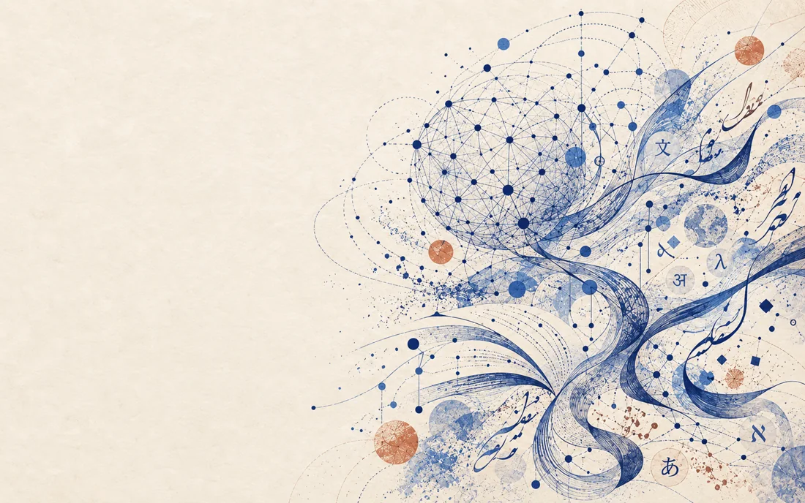
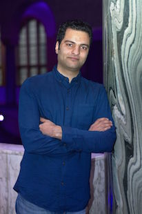

University of Tehran · TeIAS LLM Lab
Yadollah Yaghoobzadeh
I study large language models, with a focus on how they generate original ideas and how to make their outputs more creative and diverse.

Research
Creativity in language models
01
Creative generation
How language models combine concepts to generate original and diverse ideas.
02
Creativity evaluation
Benchmarks and human judgments of originality, flexibility, and elaboration.
03
Culture & imagination
Persian literature, figurative language, and cultural knowledge in language models.
My broader work covers multilingual knowledge, model interpretability, and efficient, modular adaptation.

About
I am an assistant professor in Electrical and Computer Engineering at the University of Tehran and co-direct the LLM Lab at TeIAS. I previously worked at Microsoft Research Montréal and completed my PhD at LMU Munich.
News and Activities
- A paper accepted to ACL 2026 (main)
- A paper accepted to EACL 2026 (main)
- Serving as Senior Area Chair for ACL 2026
- Two papers accepted to EMNLP 2025 (Findings)
- A paper accepted to ACL 2025 (main)
- Two papers accepted to NAACL 2025 (main)
- Two papers accepted to COLING 2025
- Serving as Senior Area Chair for ACL 2025
- A paper accepted to LREC-COLING 2024
- Serving as an area chair for ACL 2024
- Serving as an area chair for EMNLP 2023
- A paper accepted at EMNLP 2023 (Findings)
- Two papers accepted at ACL 2023
- A paper accepted at EMNLP 2022 (about: analyzing word-overlap bias in NLI.)
- A paper accepted at ACL 2022 (about: analyzing metaphorical information in pre-trained language models.)
- A paper accepted at NAACL 2022 (about: a better interpretation method for Transformer models in NLP.)
- A paper accepted at LREC 2022 (about: a new dataset (PerCQA) for community question answering.)
- A paper accepted at Semantic Web Journal (about: a new question-answer matching model.)
Teaching & advising
I teach undergraduate AI and data science and graduate courses in NLP, foundation models, and large language models.
Foundation Models in NLP course materials
Course history
- Large Language Models (Graduate, Co-Instructor), University of Tehran and TEIAS, Spring 2024-2026.
- Foundation Models in Natural Language Processing (Graduate), University of Tehran, Fall 2021-2023.
- Natural Language Processing (Graduate), University of Tehran, Spring 2021.
- Introduction to Data Science (Undergrad, Co-Instructor), Spring 2024-2026
- Artificial Intelligence (Undergrad), University of Tehran, 2021-2026.
Graduated students
- MS: Mohsen Fayyaz, Ali Edalat, Sahar Rajabi, Milad Reisi, Ali Zolnour, Samin Mehdizadeh, Hamed Amiri, Mostafa Masoudi, Sepehr Kamahi, Nikoo Naghavian, Danial Namazi, Mohammadreza Elmi, Faezeh Hosseini, Melika Nobakhtian, Armin Tourajmehr
- BS: Ehsan Aghazadeh, Sara Tavakoli, Mahdiyar Aliakbar Alavi, Sina Pakseresht, Kasra Karaji, Sepiedeh Rahimian, Tanin Zeraati, Amirhossein Dabiri, Mohammadreza Bakhtiari, Shayan Vassef, Nilufar Mohammadi, Paria Khoshtab, Ali Akhgari, Hadi Babalou, Rashid Ahmadi, Mahdi Nouri